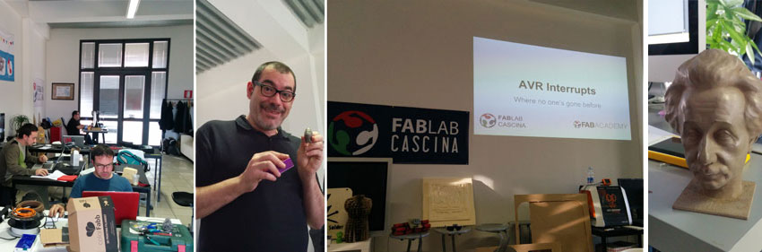
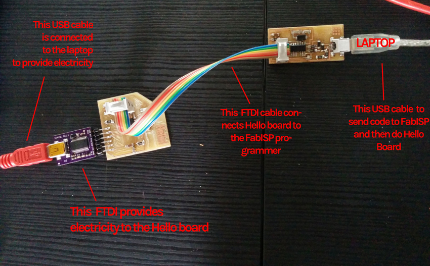
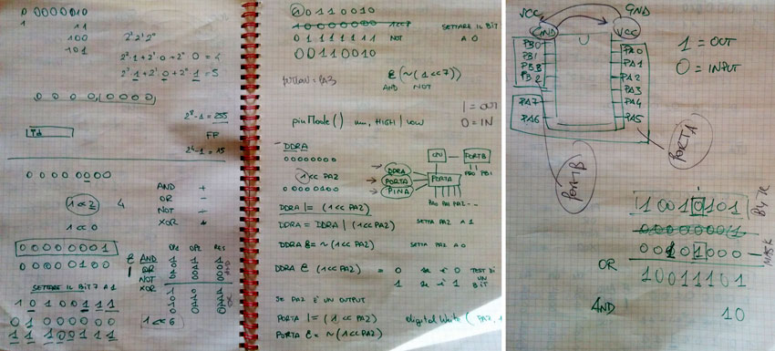
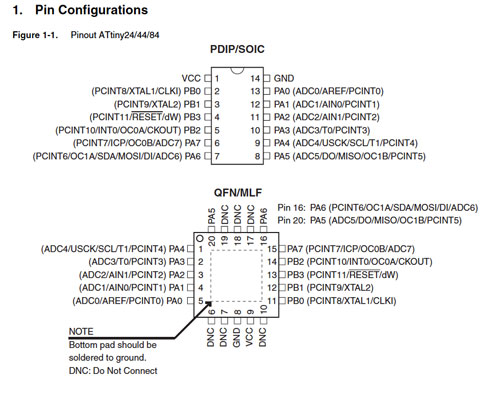

For this week the assignment consist in reading a microcontroller datasheet and programming the Hello Echo board to do something at least with one programming language. I have no background in electronics.
I accomplished this assignment ad Fablab Cascina, where I also received a thorough lesson about binary code, AVR architecture, how C language interact with this architecture and the ATtiny44 microcontroller and AVR's interrupt by Fiore Basile.

Before proceeding I have to download and install few packages, like:
- CrossPack-AVR
- Command Line Tools for Xcode to install GCC compiler on MacOSX
- AVR dude, a very popular command-line program for programming AVR chips. Avrdude version 5.5 and higher has built-in support for USBtinyISP
- ATtiny44 datasheet
- FTDI drivers
To connect the Hello Echo board to my FabISP I used a ribbon cable between Hello board and FabISP and using a FTDI mini-usb board to provide electricity to the Hello Board.

I have been at FabLab Cascina, and there I received a thorough lesson about binary code, 8 bits architecture and the microcontroller structure. I learned the meaning of the ATtiny44 pinout.

Datasheet explains the structure of pinout of the microcontroller, meaning, every pins located on the two sides of the Attiny44 provides a specific task onto the architecture. In ATtiny44 pins are basically: one supply voltage pin, one ground pin and two groups of pins divided in PA (port A) and PB (port B). Within this pins, there are RESET pin (port B), MISO and MOSI (port A), SCK (port A) that are those I need to connect with the ISP 6 - pin header connector to program the board using the FabISP usbtiny programmer (to which I have to add also GND and VCC pins).

I prepared the LED.c file with two simple instruction to turn my led on:
- enabling the pin connected to the LED to work as an output
- instructing the microcontroller to turn on the output pin (and light the LED up)
For the makefile I used always the same file, hello.ftdi.44.echo.c.make in which I had just to modify the first line: PROJECT=YOURFILENAME.echo and take care just about the frequency:LED.c
// LED #include#include int main() { //SETUP //LED is PB2 DDRA = _BV(PA7); //Enable output on the LED pin PORTA = _BV(PA7); //Turns LED on }
I placed LED.c and its makefile in the same folder to test the LED blink.LED makefile
PROJECT=led.echo SOURCES=$(PROJECT).c MMCU=attiny44 F_CPU = 20000000 CFLAGS=-mmcu=$(MMCU) -Wall -Os -DF_CPU=$(F_CPU) $(PROJECT).hex: $(PROJECT).out avr-objcopy -O ihex $(PROJECT).out $(PROJECT).c.hex;\ avr-size --mcu=$(MMCU) --format=avr $(PROJECT).out $(PROJECT).out: $(SOURCES) avr-gcc $(CFLAGS) -I./ -o $(PROJECT).out $(SOURCES) program-bsd: $(PROJECT).hex avrdude -p t44 -c bsd -U flash:w:$(PROJECT).c.hex program-dasa: $(PROJECT).hex avrdude -p t44 -P /dev/ttyUSB0 -c dasa -U flash:w:$(PROJECT).c.hex program-avrisp2: $(PROJECT).hex avrdude -p t44 -P usb -c avrisp2 -U flash:w:$(PROJECT).c.hex program-avrisp2-fuses: $(PROJECT).hex avrdude -p t44 -P usb -c avrisp2 -U lfuse:w:0x5E:m program-usbtiny: $(PROJECT).hex avrdude -p t44 -P usb -c usbtiny -U flash:w:$(PROJECT).c.hex program-usbtiny-fuses: $(PROJECT).hex avrdude -p t44 -P usb -c usbtiny -U lfuse:w:0x5E:m program-dragon: $(PROJECT).hex avrdude -p t44 -P usb -c dragon_isp -U flash:w:$(PROJECT).c.hex
make -f led.make
make -f led.make program_usbtiny_fuses
make -f led.make program_usbtiny
I then prepared the code button.c to make the LED on my board blinking when button is pressed.Program USBTiny / hello.ftdi.44.echo.c
cicciocane:C_code sabinabarcucci$ make avr-gcc -mmcu=attiny44 -Wall -Os -DF_CPU=20000000 -I./ -o hello.ftdi.44.echo.out hello.ftdi.44.echo.c avr-objcopy -O ihex hello.ftdi.44.echo.out hello.ftdi.44.echo.c.hex;\ avr-size --mcu=attiny44 --format=avr hello.ftdi.44.echo.out AVR Memory Usage ---------------- Device: attiny44 Program: 758 bytes (18.5% Full) (.text + .data + .bootloader) Data: 64 bytes (25.0% Full) (.data + .bss + .noinit) cicciocane:C_code sabinabarcucci$ Display all 1490 possibilities? (y or n) cicciocane:C_code sabinabarcucci$ make program-usbtiny-fuses avr-objcopy -O ihex hello.ftdi.44.echo.out hello.ftdi.44.echo.c.hex;\ avr-size --mcu=attiny44 --format=avr hello.ftdi.44.echo.out AVR Memory Usage ---------------- Device: attiny44 Program: 758 bytes (18.5% Full) (.text + .data + .bootloader) Data: 64 bytes (25.0% Full) (.data + .bss + .noinit) avrdude -p t44 -P usb -c usbtiny -U lfuse:w:0x5E:m avrdude: AVR device initialized and ready to accept instructions Reading | ################################################## | 100% 0.01s avrdude: Device signature = 0x1e9207 avrdude: reading input file "0x5E" avrdude: writing lfuse (1 bytes): Writing | ################################################## | 100% 0.01s avrdude: 1 bytes of lfuse written avrdude: verifying lfuse memory against 0x5E: avrdude: load data lfuse data from input file 0x5E: avrdude: input file 0x5E contains 1 bytes avrdude: reading on-chip lfuse data: Reading | ################################################## | 100% 0.00s avrdude: verifying ... avrdude: 1 bytes of lfuse verified avrdude: safemode: Fuses OK (H:FF, E:DF, L:5E) avrdude done. Thank you.
And I have modified the PROJECT name in its related makefilebutton.c
#include#include #define TRUE 1 #define FALSE 0 int main() { //SETUP //Button is on PA3 //LED is PA7 PORTA|= _BV(PA3); //Turn button pullup resistor on DDRB = _BV(PA7); //Enable output on the LED pin //PORTB = _BV(PB2); //Turns LED on //LOOP while (TRUE) { if ((PINA & _BV(PA3))) //button is not pushed { PORTA &= ~ (_BV(PA7)); //turn LED off } else { PORTA |= _BV(PA7); //turn LED on _delay_ms(10); PORTA &= ~(_BV(PA7)); _delay_ms(100); } } }
button.c makefile
PROJECT=button SOURCES=$(PROJECT).c MMCU=attiny44 F_CPU = 20000000 CFLAGS=-mmcu=$(MMCU) -Wall -Os -DF_CPU=$(F_CPU) $(PROJECT).hex: $(PROJECT).out avr-objcopy -O ihex $(PROJECT).out $(PROJECT).c.hex;\ avr-size --mcu=$(MMCU) --format=avr $(PROJECT).out $(PROJECT).out: $(SOURCES) avr-gcc $(CFLAGS) -I./ -o $(PROJECT).out $(SOURCES) program-bsd: $(PROJECT).hex avrdude -p t44 -c bsd -U flash:w:$(PROJECT).c.hex program-dasa: $(PROJECT).hex avrdude -p t44 -P /dev/ttyUSB0 -c dasa -U flash:w:$(PROJECT).c.hex program-avrisp2: $(PROJECT).hex avrdude -p t44 -P usb -c avrisp2 -U flash:w:$(PROJECT).c.hex program-avrisp2-fuses: $(PROJECT).hex avrdude -p t44 -P usb -c avrisp2 -U lfuse:w:0x5E:m program-usbtiny: $(PROJECT).hex avrdude -p t44 -P usb -c usbtiny -U flash:w:$(PROJECT).c.hex program-usbtiny-fuses: $(PROJECT).hex avrdude -p t44 -P usb -c usbtiny -U lfuse:w:0x5E:m program-dragon: $(PROJECT).hex avrdude -p t44 -P usb -c dragon_isp -U flash:w:$(PROJECT).c.hex
make -f led.make
make -f led.make program_usbtiny_fuses
make -f led.make program_usbtiny
Program USBTiny / button.c
cicciocane:button sabinabarcucci$ make program-usbtiny
avr-objcopy -O ihex button.out button.c.hex;\
avr-size --mcu=attiny44 --format=avr button.out
AVR Memory Usage
----------------
Device: attiny44
Program: 106 bytes (2.6% Full)
(.text + .data + .bootloader)
Data: 0 bytes (0.0% Full)
(.data + .bss + .noinit)
avrdude -p t44 -P usb -c usbtiny -U flash:w:button.c.hex
avrdude: AVR device initialized and ready to accept instructions
Reading | ################################################## | 100% 0.01s
avrdude: Device signature = 0x1e9207
avrdude: NOTE: "flash" memory has been specified, an erase cycle will be performed
To disable this feature, specify the -D option.
avrdude: erasing chip
avrdude: reading input file "button.c.hex"
avrdude: input file button.c.hex auto detected as Intel Hex
avrdude: writing flash (106 bytes):
Writing | ################################################## | 100% 0.12s
avrdude: 106 bytes of flash written
avrdude: verifying flash memory against button.c.hex:
avrdude: load data flash data from input file button.c.hex:
avrdude: input file button.c.hex auto detected as Intel Hex
avrdude: input file button.c.hex contains 106 bytes
avrdude: reading on-chip flash data:
Reading | ################################################## | 100% 0.16s
avrdude: verifying ...
avrdude: 106 bytes of flash verified
avrdude: safemode: Fuses OK (H:FF, E:DF, L:5E)
avrdude done. Thank you.